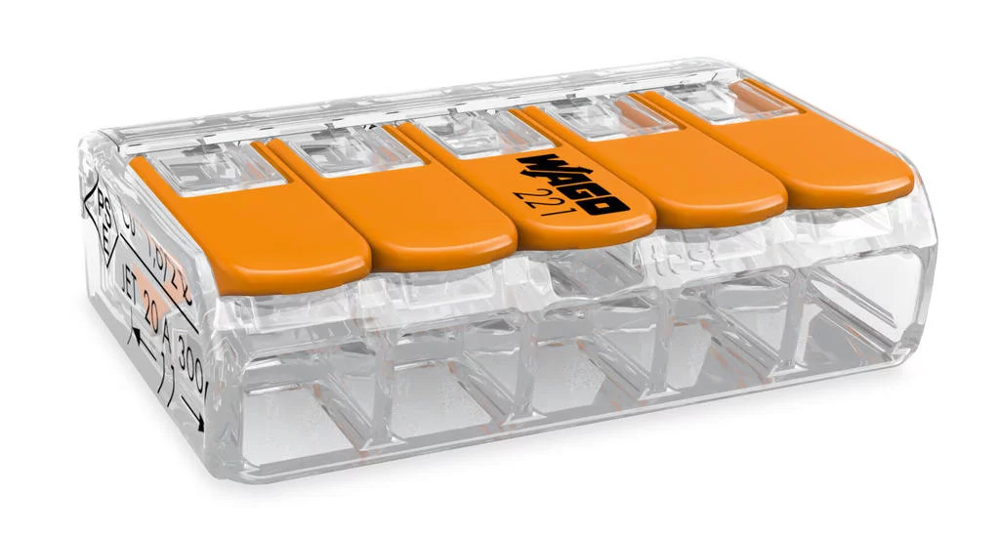

electrical connectors revision 9804
^ Parts infobox ^^
| image | Electrical-connectors.png |
| designers | WAGO |
| date | ? |
| vitamins | |
| materials | [[plastics|Plastics]], [[steels|Steels]] |
| transformations | |
| lifecycles | |
| tools | [[3d_printers|3D printers]] |
| parts | |
| techniques | |
| files | |
| suppliers | |
| git | |
Introduction
An electrical connector is an electromechanical device used to join electrical conductors and create an electrical circuit. Most electrical connectors have a gender – i.e. the male component, called a plug, connects to the female component, or socket. The connection may be removable (as for portable equipment), require a tool for assembly and removal, or serve as a permanent electrical joint between two points. An adapter can be used to join dissimilar connectors.
Challenges
Thousands of configurations of connectors are manufactured for power, data, and audiovisual applications. Additionally, each type of connector often requires it's own tools, processes, and consumables such as crimping, soldering, welding, etc.\\
<youtube>q43tZ6DjuIE</youtube>
Approaches

Wherever possible, replimat projects are wired with versatile and fully reusable 221-615 five position Wago lever nuts or equivalent terminal blocks (link?). This is a larger version of the 221-415 connector and accepts 20 - 10 gage wire as opposed to 24 - 12 gage range accessible with the 221-415.
The Wago 221-615 Holder/Mount allows for Wago 221-615 connectors to be panel mounted and easily reconfigurable bus bars.
Adapting to other connector varieties
Development targets
Adjust the Wago 221-615 Holder/Mount to fit the grids.
References
- NEF Heat Shrink Crimp and Solder Butt Connector Assortment, 22-18, 16-14 and 12-10 Gauge, Plastic Organizer, 55 Piece Kit
- Trianglelab Mini Fast Wire Cable Connectors High Quality Cable Plug Line Connector Heater Thermistor MOTOR Line Extension
- Wikipedia: Electrical connector
- Common wire-to-board, wire-to-wire connectors, and crimp tools